Private, and addressed by slug
Each founder gets their own URL and a short code from their welcome email. No account creation, no password reset flow, no username anybody has to remember.
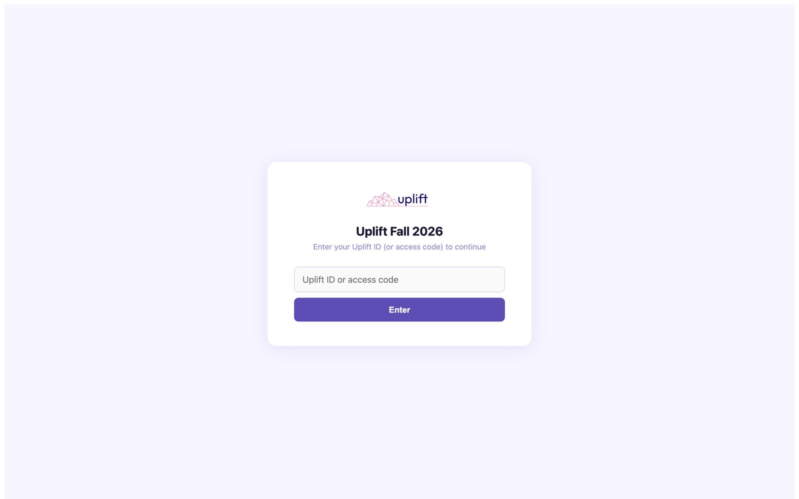
One week at a time
The portal opens week by week rather than showing eight weeks of homework on day one. Founders arriving in week four see week four, with everything behind them marked done and everything ahead of them visibly locked rather than hidden.
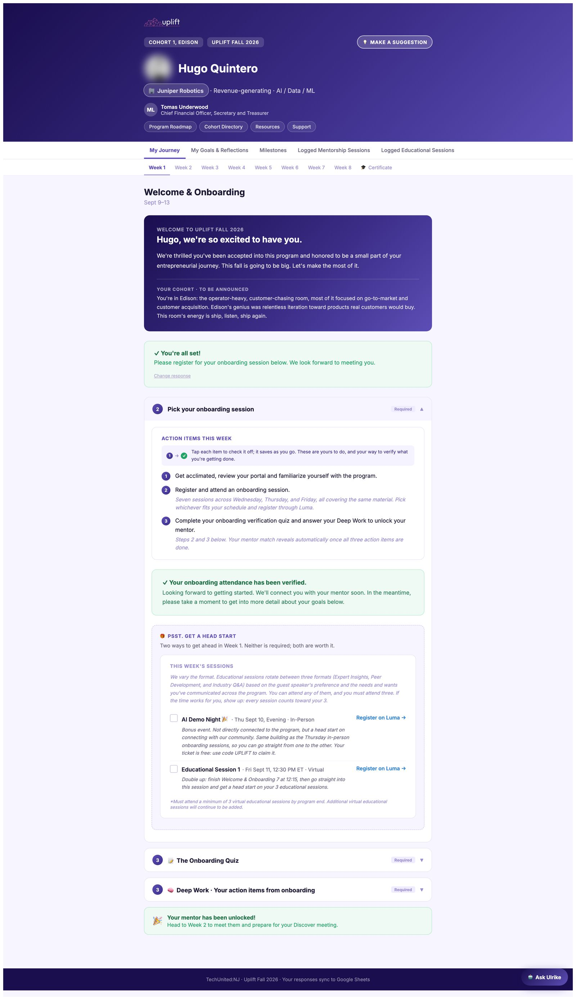
Ten questions, and you have to get all ten
The quiz is not a hurdle for its own sake. It is one of three things gating the mentor reveal, and it exists because a founder who cannot answer what the three meetings are will waste their mentor's first hour finding out.
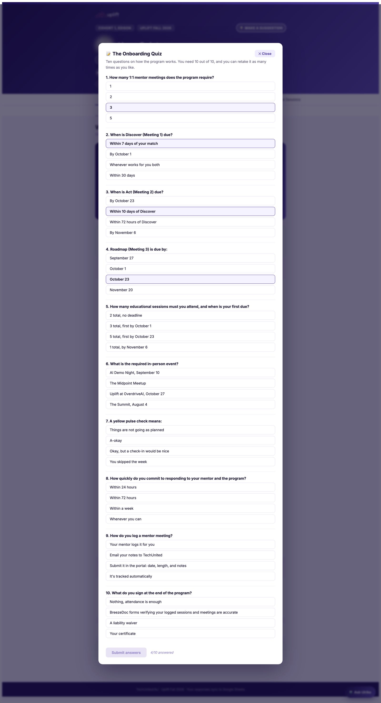
Written prompts, saved as you type
Founders map what they want, what they are stuck on, and what they need from a mentor before they are told who their mentor is. Saves are queued locally and retried, so a founder writing on a train does not lose a paragraph to a dropped connection.
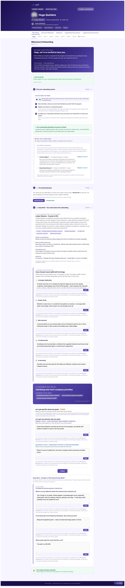
Earned, not handed over
The match unlocks only after the Week 1 gate: onboarding attended, quiz passed, Deep Work done. Founders who clear it arrive at the first meeting having already thought about what they want.
This leaked four times. The mentor's identity was reachable through four separate surfaces before the gate. Patching each one individually did not hold, because the next feature reintroduced it. The fix was structural: the mentor only ships from the milestones API once released, with a test that proves it.
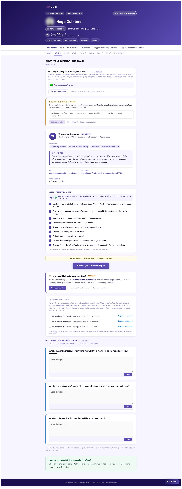
Who they are, and why you got them
Not just a name and an email. The card carries the mentor's background, what they offered, and the reasoning behind the pairing, so the founder can see the match was made rather than assigned.
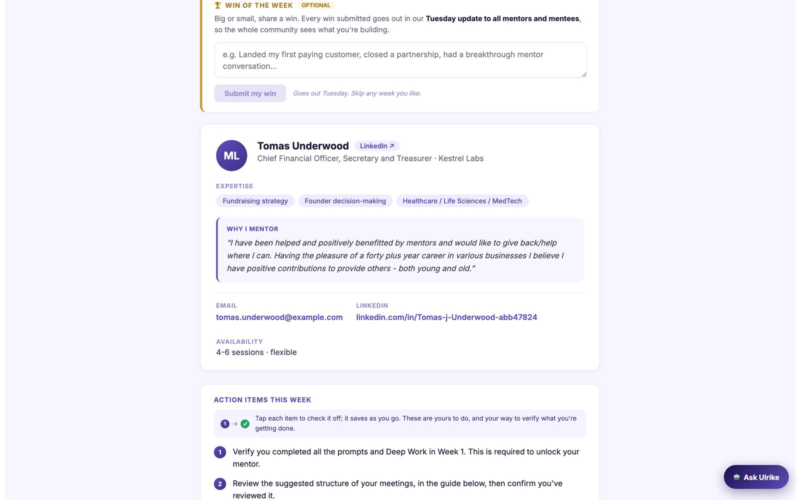
Three meetings, tracked toward three hours
Discover, Act and Roadmap, each with a deadline relative to the one before it. The founder logs the session with notes; the mentor gets a one-click confirmation. Nothing counts until both sides agree it happened.
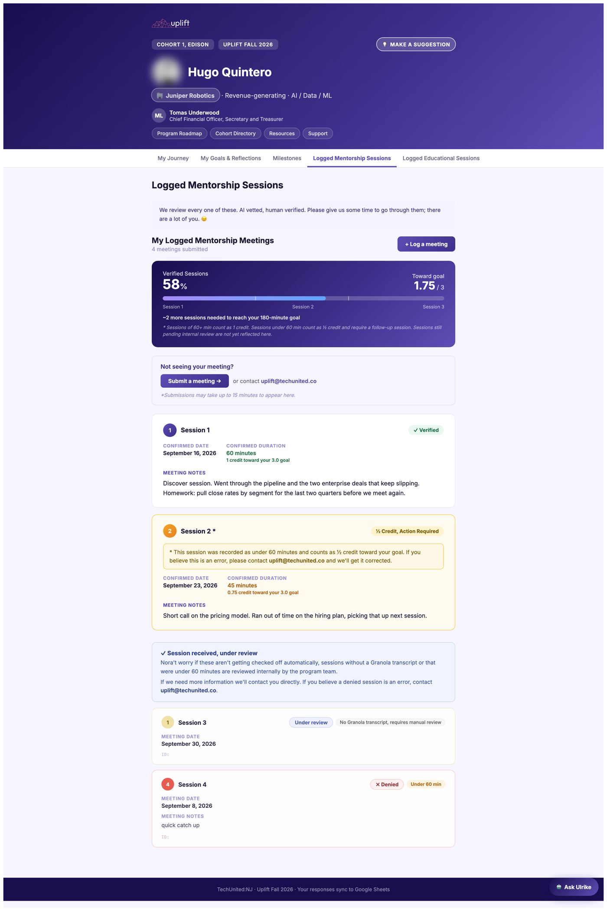
The same data the console reads
What the founder sees here and what the programme team sees are the same eleven milestones from the same source. There is no separate internal view showing something different.
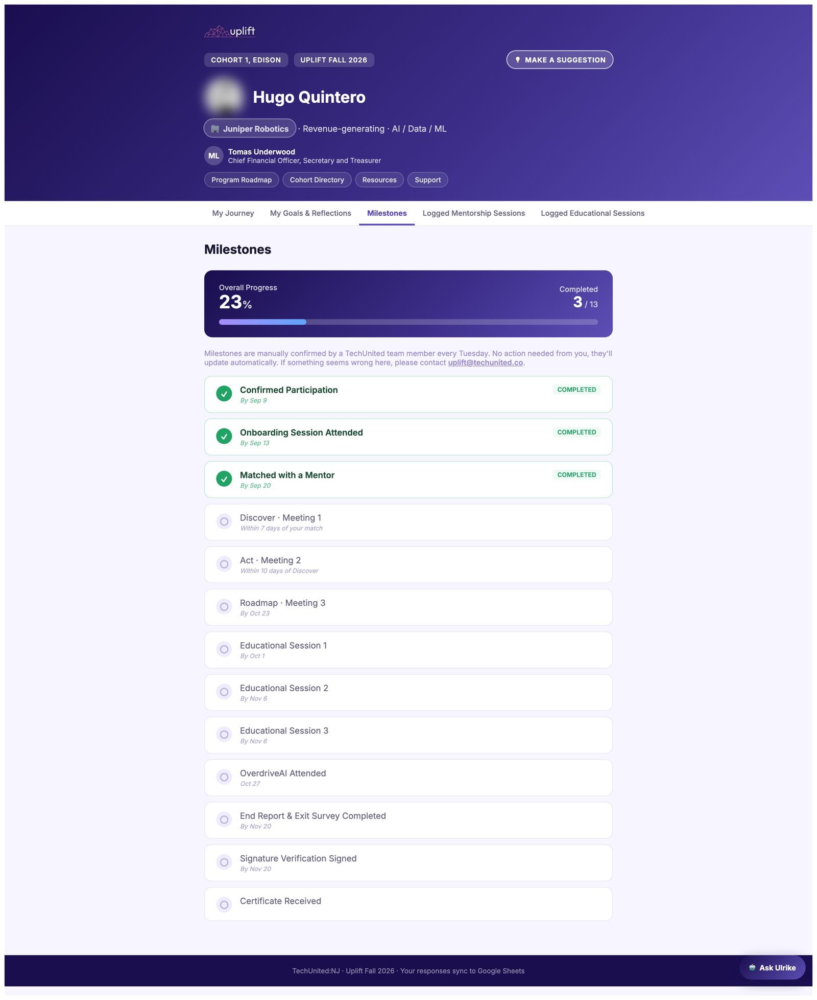
Everything they wrote, collected
Founders fill in prompts week by week and then never see them again. Collecting them makes the change visible: the Week 1 answer and the Week 6 answer to the same question sit next to each other.
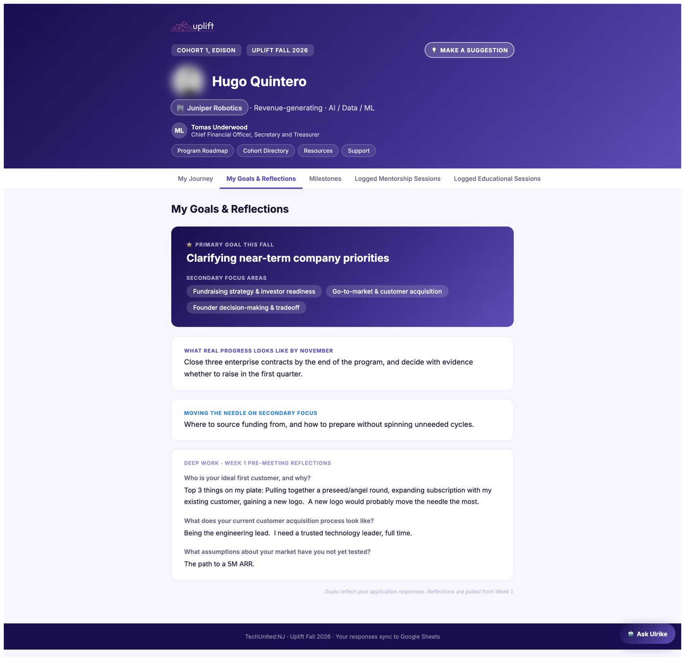
Attendance nobody has to report
Three sessions are required. Attendance is pulled from the event platform automatically, so completion does not depend on a founder remembering to tell us they came.
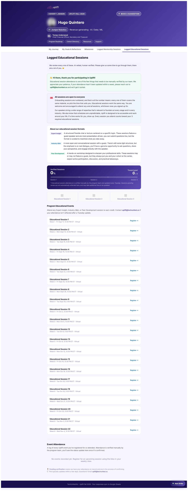
All eight weeks on one screen
For the founder who wants to plan around it rather than be led through it week by week.
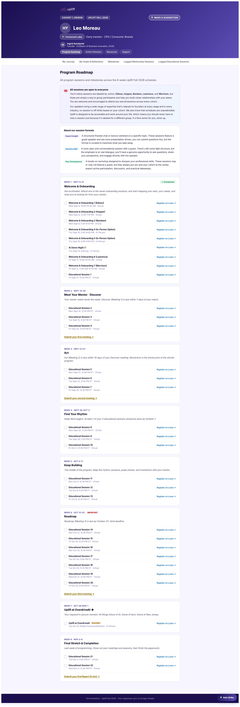
Who else is in the room
Founders grouped into five peer rooms by stage and focus. You can see your own room and browse the others, because the cohort is half the value of the programme.
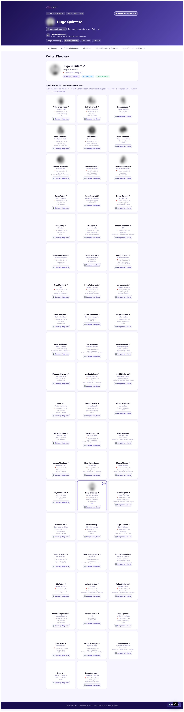
Answering from what the portal already knows
Founders kept emailing to ask things the portal could already answer: when their next meeting was due, how many educational sessions they still needed, what their mentor had committed to. The assistant answers from the same live data rather than a generic help article.
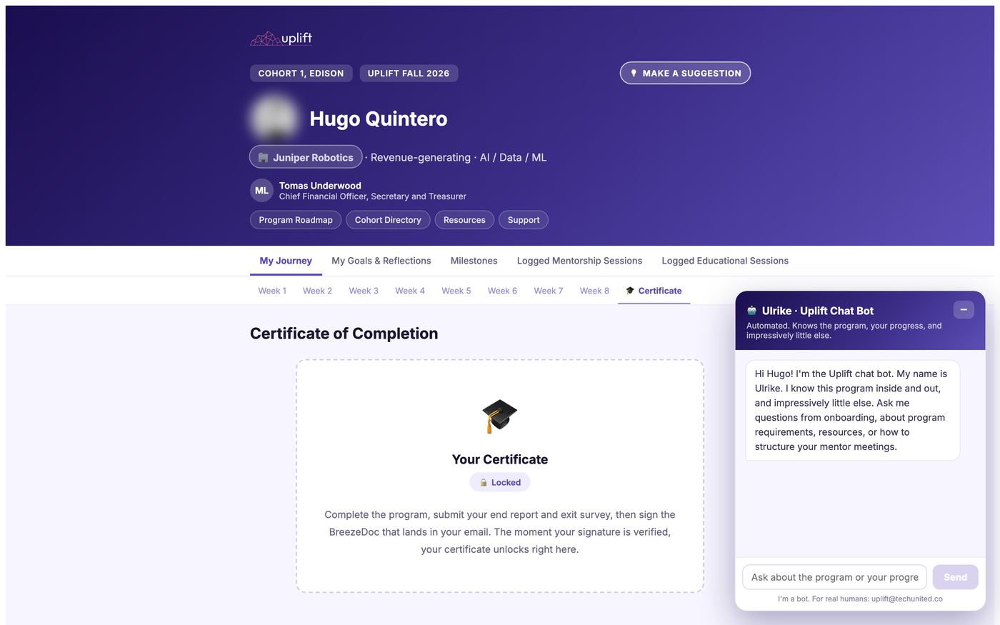
Generated on completion
Print-ready, per founder, produced from the same milestone data that decides whether they completed. Promised at the start of the fall cohort and delivered at the end of it.
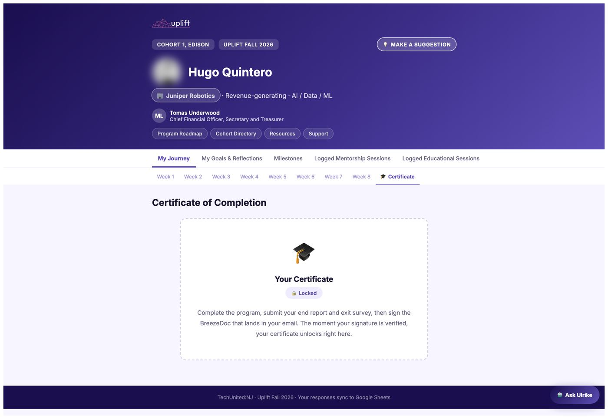
Acceptance and match reveal
Every send is previewable before it fires and logged after. The acceptance email is generated from the same HTML the print version uses, so the two cannot drift.

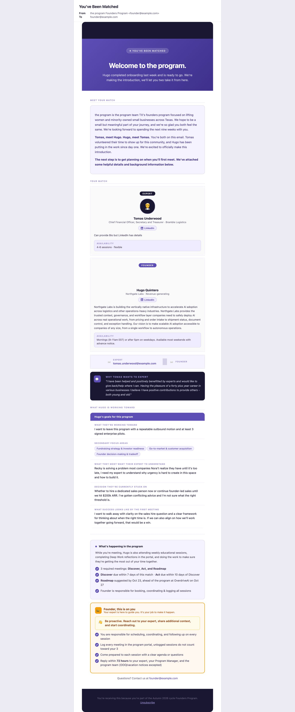
Six guides, and you can read all of them
Every resource in the portal was written for this programme rather than linked from someone else's blog. They are live in this portfolio, not screenshots: open the resource library and click into any of the six.
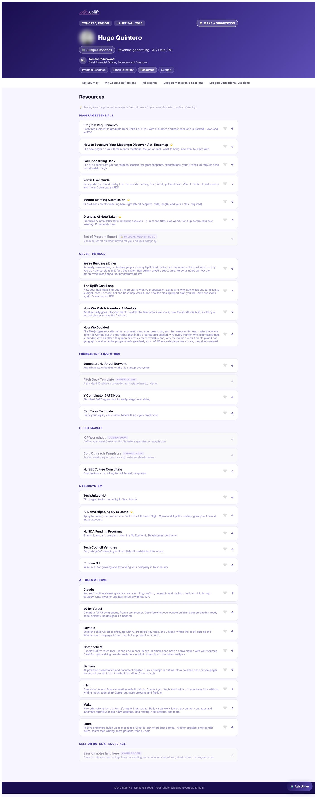